[Silent Hill 4] The Dubious Roots of the Room 302 Theory
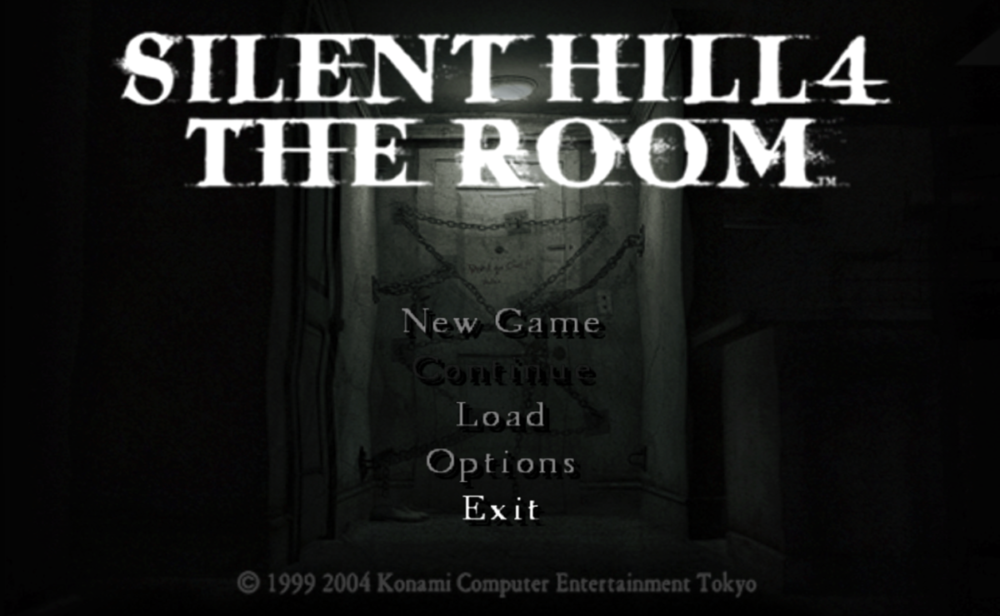
Breaking Down the Original Source of a 20-Year Rumor with No Japanese Evidence
This article mirrors the version on Medium.
![[Silent Hill 4] The Dubious Roots of the Room 302 Theory](../img/m01.png)
This copy is provided as a backup and for easier access. If you cite or quote this, please refer to the Medium version.

There's a theory overseas that Silent Hill 4 wasn't originally planned as part of the Silent Hill series, that it started out as a completely different project called “Room 302” and was later forced into the Silent Hill series as a spin-off.
But I’ve never seen any source backing up that claim in Japan, where the game was developed. In fact, whenever SH4’s producer Yamaoka-san and director Murakoshi-san have spoken about it, they’ve consistently said the opposite.
“Silent Hill 4 was made from scratch as a new Silent Hill title, and that they added the subtitle “The Room” so even first time players would understand it is not a direct sequel and feel comfortable picking it up.”
So I looked into the source of the rumor.
The earliest "spin-off" claim?
Eurogamer: Kristan Reed "Silent Hill 4: The Room Review" July 27,2004
https://web.archive.org/web/20041019094323/http://www.eurogamer.net/article.php?article_id=56151

Originally conceived as a spin-off (and arguably should have stayed that way),
There’s no actual source for this statement, and it’s likely incorrect since it contradicts the actual development history, but out of everything I’ve found so far, this seems to be the earliest example of the spin-off claim. If anyone has found an older article, please let me know.
Then there are these two articles, both published at the end of August, just a few days apart, before the European and North American release.
Eurogamer: Kristan Reed “Silent Hill 4: Two Guys In A Room Interview” August 25, 2004
https://web.archive.org/web/20040917215449/https://www.eurogamer.net/article.php?article_id=56424

It’s certainly a dramatic change alright, but rumour has it that the game didn’t even start life as a Silent Hill project. “That’s actually the right information you have,” Tsuboyama admits. “Originally this development was started from what we named Room 302, rather than Silent Hill, so the original concept wasn’t from Silent Hill.” Presumably that was to give the game a better chance commercially? He nods. “We started off with the title Room 302, but if the Silent Hill didn’t exist then we still had the idea of Room 302. Without Silent Hill we didn’t have this title, but because we did have Silent Hill we wanted to have something different, but it’s kind of a mixture of ideas.”
Boomtown: David Jenkins “Silent Hill 4: The Room interview” August 31, 2004
https://web.archive.org/web/20041216065301/http://ps2.boomtown.net/en_uk/articles/art.view.php?id=6037

Boomtown: Is it true that The Room was not originally going to be part of the Silent Hill series and that this was only changed part way through development.
In a sense this is true because the game began life as simply Room 302. However, it was always at least a spin-off of Silent Hill and the most important thing was simply that it be different to the previous games. Certainly if Silent Hill had not existed we would not have gotten the idea for The Room, so in that sense they have always been together.
In both cases, Yamaoka-san and Tsuboyama-san are interviewed, and both articles claim that the game was born as a project called Room 302 and wasn’t originally meant to be part of the Silent Hill series.
The credited writers are different, and the structure of the articles isn’t the same. But both of them include the exact same claim: that they defeated nearly 500 enemies before finishing the game.
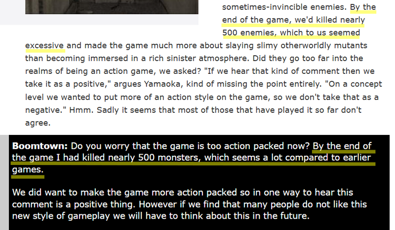
Eurogamer “By the end of the game, we’d killed nearly 500 enemies, which to us seemed excessive…”
Boomtown “By the end of the game I had killed nearly 500 monsters, which seems a lot compared to earlier games.”
That’s not a number you’d easily reach unless you deliberately go around carefully killing the wall leeches (Tremers) and Toadstools. Did both writers defeat more enemies than usual just so they could complain that there were too many? I see.
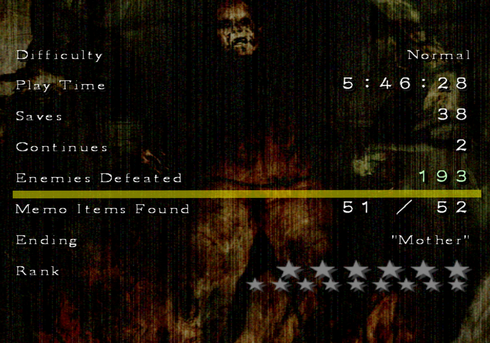
If that doesn’t ring a bell, try searching “Silent Hill 4 results screen” and look at the images people have posted of their clear data. Check the “Enemies Defeated” number. Speedruns are under 100, and even normal playthroughs usually top out around 450 at most. You would likely have to go out of your way to defeat harmless enemies to get close to 500.
Since one says “we” and the other says “I,” maybe the former was watching the latter play. But if that’s true, that would mean the two journalists were working together, right? That would explain why the wording in both articles is so similar.
By the way, in the spin-off article the Eurogamer writer said 444 enemies, but now it’s been increased to 500. The person who described text in the earlier article as “(or some that just pure pointless padding)” probably wouldn’t go and inflate the numbers in his own piece. And on top of that, it would also mean the Boomtown writer, who says “I,” personally defeated around 500 enemies as well. Hmm… taking all of that together, maybe I’ll just conclude that British game journalists aren’t very good at games.
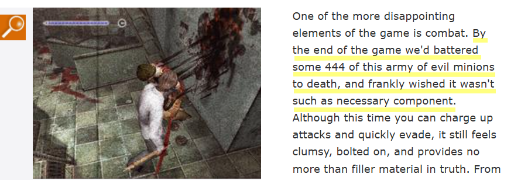
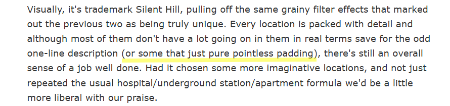
Now, returning to the two articles, if you read the interviews more closely, the content overlaps quite a bit.
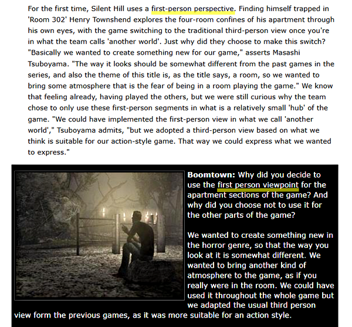
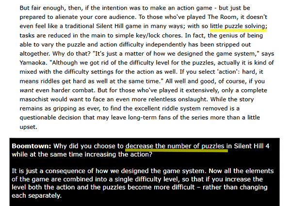
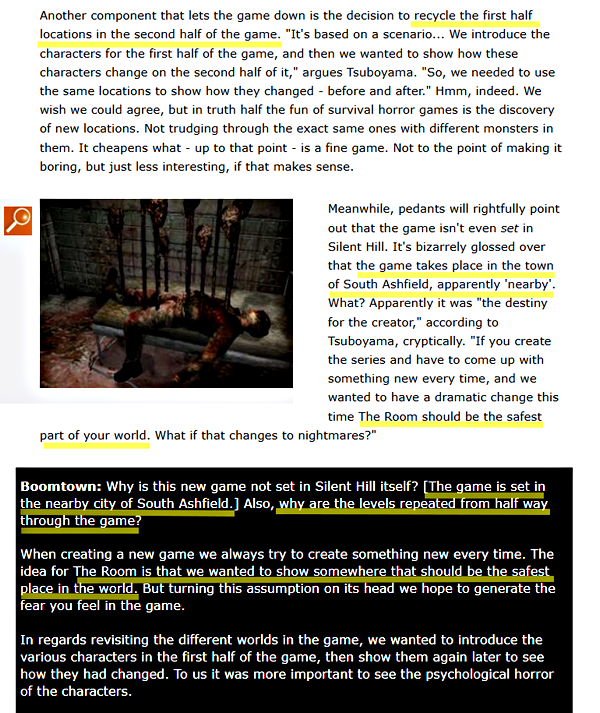
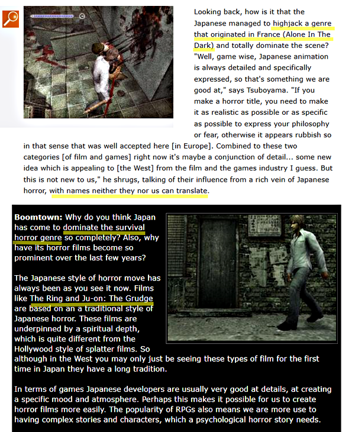
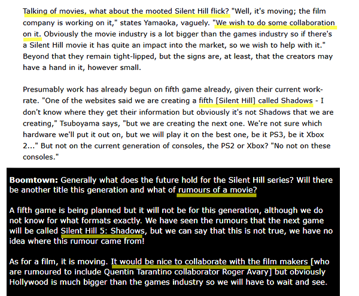
The discussion about reducing puzzle elements, reusing locations, safe room becoming dangerous, the connection between survival horror (one even mentions “Alone in the Dark” as an example) and Japanese culture, they’re covering the same exchanges, just fleshed out differently, almost like each writer built their own version of the same conversation. They even both end by talking about movies and the phantom SH5 project.
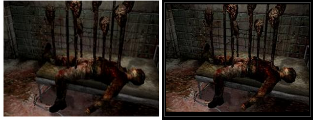
One of the screenshots is the same, but that’s just because they’re using the standard media assets provided to the press. What’s also notable is that neither article includes photos of the two devs, even though the interviews were supposedly conducted in person.
To summarize:
- They share the exact same phrase, “Room 302,” which doesn’t appear in any other interviews.
- They both claim the above-average “500 enemies defeated” condition. Even for a joint interview, this part wouldn’t normally match.
- The structure and embellishment differ, but the actual Q&A content overlaps.
- Both rely only on official media screenshots.

But since there are also parts where the Boomtown side is more detailed, such as mentioning specific Japanese movie titles, it’s not simply a case of a later article copying an earlier one.
Eurogamer’s content distribution and syndication system
Actually, it’s quite simple.
This may be because at the time, Eurogamer was running a business where they distributed their content to other sites. This writer is listed under the editorial staff at the bottom of that page.
Eurogamer Media
https://web.archive.org/web/20040903003002/http://www.eurogamer.biz/media_content.php
Eurogamer employs a talented team of games journalists experienced in producing both online and paper products. Content from both Eurogamer.net and GamesIndustry.biz is available for syndication to your own publication, and the team is available to produce exclusive bespoke content by contract.
Boomtown credits a different writer, so that person probably wrote the article, but the original data was likely provided by Eurogamer.
So phrases like “SH4 was originally created as Room 302 and then forced into the Silent Hill series” or “500 enemies” probably match because they came from the supplied material. That said, even if it was common practice at the time, writing as if he had conducted the interview himself isn’t exactly honest.

As ever in these situations both questions and answers had to go through a translator, and it wasn’t always obvious who exactly was answering what, but the results of our little discussion where pleasingly enlightening nevertheless.
In addition, this means that at first glance, it still looks like two separate outlets are independently saying that “SH4 was born as Room 302 and wasn’t originally meant to be part of the Silent Hill series.”
That’s likely why this narrative went on to heavily influence later English-language articles, Wikipedia entries, and fandom discussions all the way up to today.
Personally, what bothers me more in the Eurogamer article than the Room 302 theory is this particular term. Of course, this also contradicts the development process described by the devs themselves.
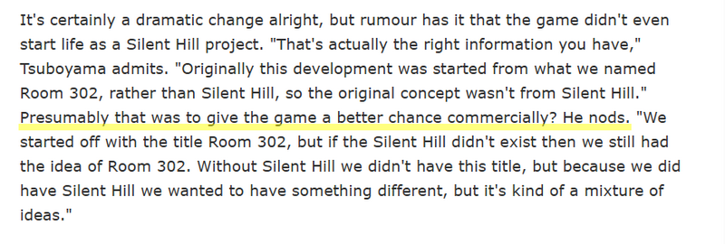
Presumably that was to give the game a better chance commercially? He nods.
“SH4 was originally supposed to be a separate work, but for commercial reasons it was forcibly incorporated into the Silent Hill series.”
It’s a phrase that anti-fans still often use today. If this expression was added independently, its publication immediately before the European and North American release makes the tone difficult to interpret as neutral reporting.
Even otherwise, with the number of enemies increasing from 444 to 500, and considering the possibility that it was distributed to other companies, it raises questions about whether the coverage may have been somewhat slanted from the beginning.
And these points also affect the credibility of this article, and they allow us to gauge the plausibility of the Room 302 theory as well. I never believed it in the first place, though.
An interview with a different company from the same period
Since it has been confirmed that the devs were there locally at the time, and there’s also an interview with a different company from around the same period, I’m not denying that interviews took place.
Kikizo: Adam Doree “Konami: The Silent Hill 4 Interview” September 6, 2004
https://web.archive.org/web/20040907143732/http://games.kikizo.com/features/konami_interview_sep04.asp
But the content of that one is different from the two articles mentioned above, it doesn’t say anything like “Room 302,” and it even includes photos of the two of them.
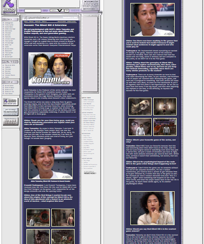

We wanted to make a sequel after Silent Hill 3 and you could say that was the initial concept, but upon that we needed to implement a lot of new flavour to the sequel, otherwise it would have been the same old Silent Hill.
And the interviewee says things completely different from those in the two articles above, only a few days apart.
If I add my personal opinion, a writer for this publication has been uploading to YouTube many interviews he conducted back when he was running the site, so there may still be an original video source for this article. Of all the articles, this one seems the most reliable.
Kikizo: Alex Wollenschlaeger “Silent Hill 4: The Room” October 6,2004
https://web.archive.org/web/20041011153209/http://games.kikizo.com/reviews/ps2/silenthill4.asp
But unfortunately, in that same site’s post-release review by another writer, wording that appears to have been picked up from the Eurogamer article, such as “Konami’s Silent Hill 4: The Room began life without the franchise portion of its title. Originally conceived as a stand-alone game, the idea was folded into the publisher’s successful and suspenseful franchise during development.”, ended up being included.
Official Japanese sources
制作者の声「第2回:部屋の恐怖」SILENT HILL4 THE ROOM ディレクター兼シナリオ担当 村越卓
Konami SILENT HILL 4 THE ROOM, Developer’s Voice”Vol. 2: “The Terror of the Room” Director and Scenario: Suguru Murakoshi
https://web.archive.org/web/20041025135039/http://www.konamityo.com/sh4/02roomq.html

[Google] This project was launched with the concept of creating a “new Silent Hill,” and when we first considered what kind of horror theme to use, we decided on the pure fear I felt as a child, “not the fear of an unfamiliar land, but the fear of being in my own room, the place I should return to,” as the main concept. In addition, we also incorporated the concepts of “spirits of the dead” and “vengeful spirits.”
As a “new Silent Hill,” we’ve completely rebuilt it from scratch. We didn’t want to be constrained by previous installments in the series, and instead approached it as a completely new horror game. The project started immediately after development of Silent Hill 2 was completed.
This is the same content I introduced on another page, an interview with Murakoshi-san from the days when “Konami Computer Entertainment Tokyo” still had its own website. As you can see from the Web Archive dates, this site already existed as the official Silent Hill series website at the time all of the above interviews were published. Of course, if you dig through the Web Archive, you’ll see it was already there before all the articles, too. It was also Team Silent’s official website. In 2005, it was reorganized and moved to the “konami.jp” website.
Same contents:
https://web.archive.org/web/20050923111423/http://www.konami.jp/gs/game/sh4/02roomq.html
It clearly states in Japanese that “Silent Hill 4 was created from scratch as a new Silent Hill.” There was also a similar interview in the official guide book as well. And of course they all say the same thing.
Silent Hill 4 The Room Official Guide Complete Edition, p.220 (First edition, July 20, 2004)

The truth had been written from the beginning on the official Japanese website, in their native language. But it seems that the English information, which already contained some inconsistencies, spread through distribution systems and the careless copying of other journalists. This is the background behind the story that is still told as plausible today.
It made me realize how important it is to check primary sources in the original language.